Terrain Generator
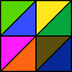
Terrain Generator is a simple terrain/elevation editor.
It can generate terrains that can be saved as:
- Doom levels (UDMF format) for advanced source ports as GZDoom, K8Vavoom etc
- RAD levels in Doom format
Project Page: https://sourceforge.net/projects/dd-terrain/
Source Code Repository: https://github.com/jval1972/DD_TERRAIN
Main Application Window
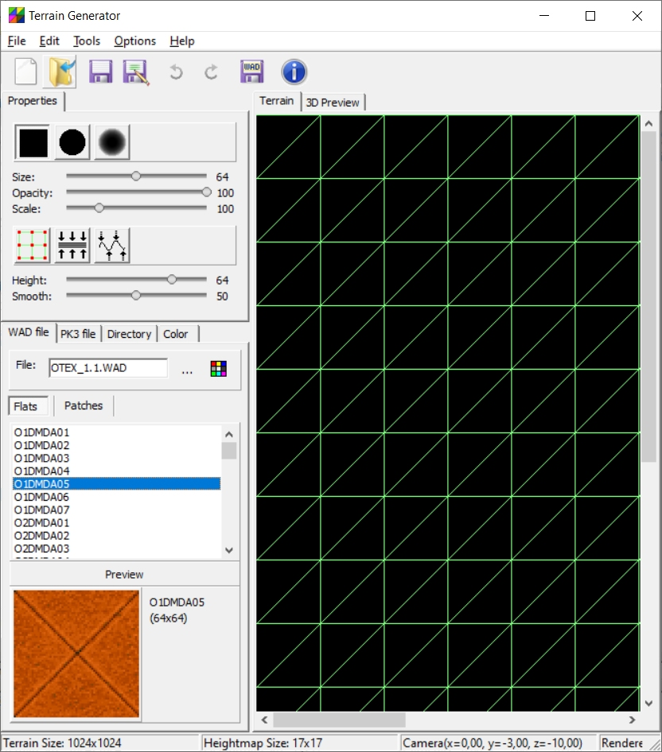
The main application consists of the drawing and editing tools, the texture manager, the 2d preview and the 3d preview.
Drawing Tools
The drawing tools are used for painting directly to the terrain texture.
There are 3 drawing tools:
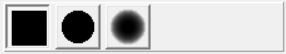
- rectangle: Draws rectangular shape
- circle: Draws round shape
- round edge: Draws round shape with smooth edge
The drawing tools can be configured by the Drawing Options:
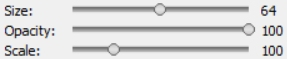
- Size: The size of the shape
- Opacity: The drawing opacity percentage (from 1 to 100)
- Scale: The drawing source scale (from 10% to 400%)
Mesh Tools
The mesh tools are used for altering the terrain geometry.
There are 3 mesh tools:
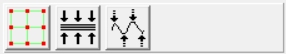
- edit mesh: Changes the position grid vertexes
- elevation: Changes the elevation of the terrain
- smooth: Smoothes the elevation of the terrain
The mesh tools can be configured by the following options:
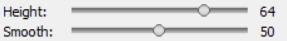
- Height: The amount of elevation that the elevation tool applies
- Smooth: The strength of smoothness that the smooth tool applies
By pressing the right mouse button over the 2d preview of the terrain the "Edit Heightmap Item" dialog appears:
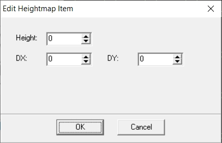
In this dialog you can manually set the elevation and x/y offsets of a vertex.
There are the following options:
- Height: The amount of elevation of the vertex
- DX/DY: Horizontal plane offsets to make accurate deformations to geometry, not limited by automatic grid spacing
Texture Manager
The texture manager allows you to load texture from various sources.
The selection is used by the drawing tools.
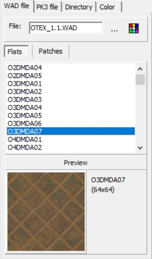
There are 4 tabs:
- WAD file: Loads flats from a WAD file
- PK3 file: Loads textures from a PK3 archive. PNG and JPG images are supported
- Directory: Loads textures from a directory in your hard drive. PNG, JPG, TGA and BMP images are supported
- Color: Plain color
2D Preview
This is where all the editing is performed with the drawing and mesh tools.
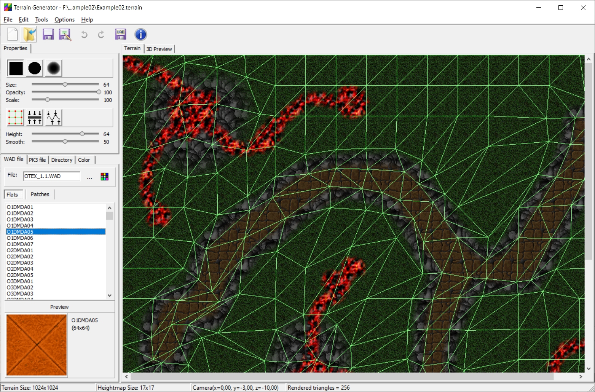
3D Preview
This is where we can observe our efforts.
We can change the camera position by clicking the left or right mouse button, or by scrolling the middle mouse button.
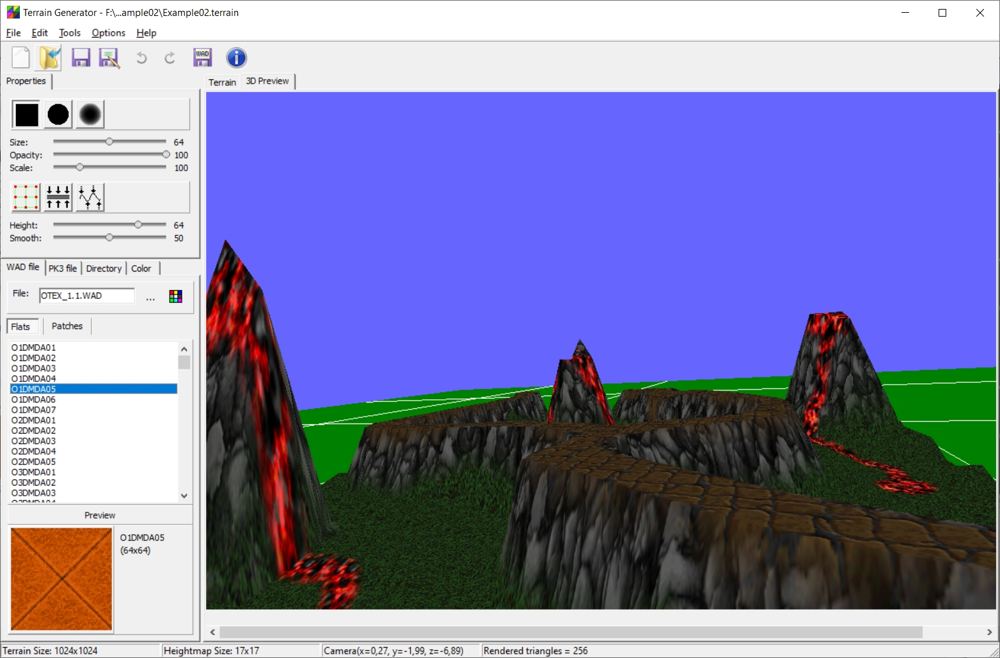
Creating a New Terrain
You can create a new terrain by selecting the File/New menu item:
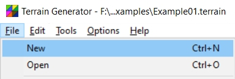
Then the "New Terrain" dialog appears:
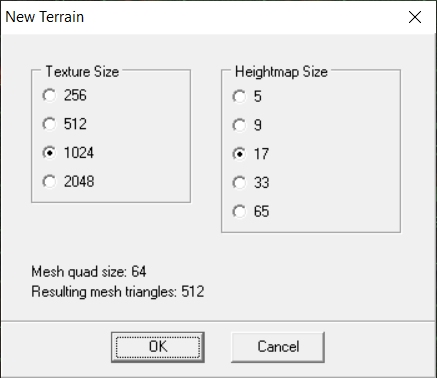
In this dialog we can select the properties of the terrain:
- Texture Size: The actual size of the terrain. This is the drawing surface and can have sizes from 256x256 to 2048x2048 pixels
- Heightmap Size: This control the number of vertexes. It's size can be from 5x5 to 65x65
Import and Export
Terrains generated with Terrain Generator are saved in a custom format. In order to share data between diffent applications we use the import and export menu items.
Import
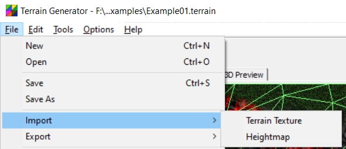
- Terrain texture: Loads the terrain texture from an image on disk. The image will be stretched to fit the terrain dimentions
- Heightmap: Loads the heightmap from an image on disk. The image will be stretched to fit the heighmap size. The image will be converted to grayscale and each pixel will represent the elevation of the terrain
Export
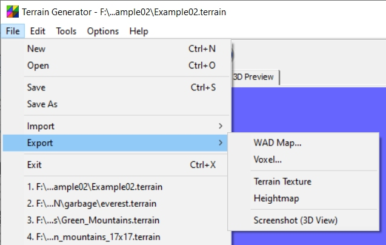
- Screenshot (3d View): Saves the current 3D view of the terrain on an image on disk.
- Radix WAD Map: Saves the terrain in a WAD file that can be used with RAD source port of Radix: Beyond the Void
- UDMF Map: Saves the terrain in a UDMF file that can be used with advanced source ports
The exported maps can be edited with DoomBuilder:
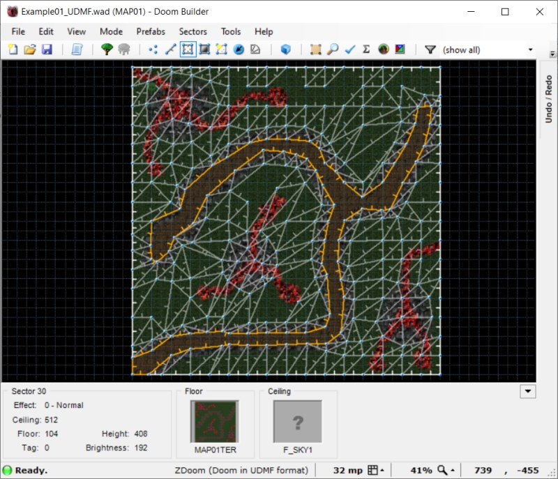